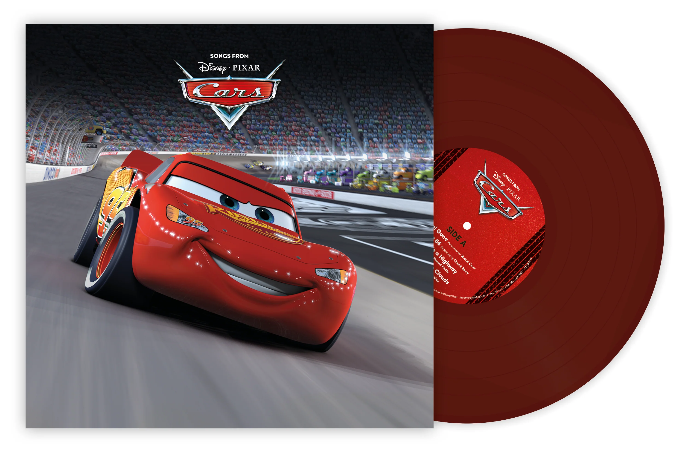

Soundtrack
The Cars soundtrack was released by Walt Disney Records on June 6, 2006. Nine tracks on the soundtrack are by popular artists, while the remaining eleven are score cues by Randy Newman. It has two versions of the classic Bobby Troup jazz standard Route 66 (popularized by Nat King Cole), one by Chuck Berry and a new version recorded specifically for the film's credits performed by John Mayer. Brad Paisley contributed two of the nine tracks to the album, one being Find Yourself used for the end credits
At the 49th Grammy Awards the soundtrack was nominated for the Best Compilation Soundtrack Album, while the John Mayer version of "Route 66" was also nominated for Best Solo Rock Vocal Performance and "Our Town" won the award for Best Song Written for a Motion Picture, Television or Other Visual Media. The track was also nominated for Best Original Song at the 79th Academy Awards.
- Released: June 6, 2006
- Recorded: 2005–2006
- Studio: Sony Pictures Studios (score)
- Genre: Pop, blues, country, rock
- Length: 52:28
- Label: Walt Disney
- Producer: Randy Newman